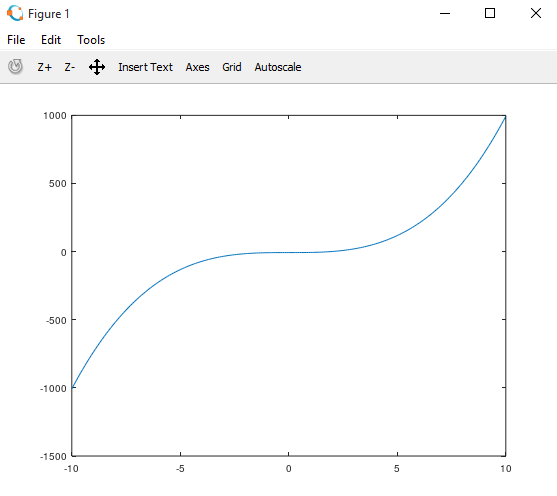
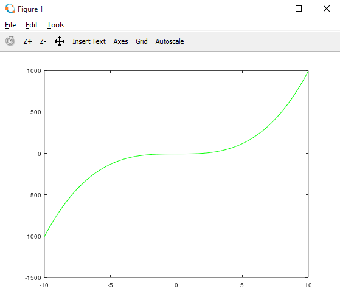
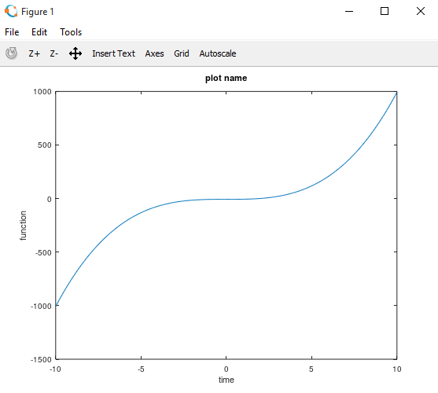
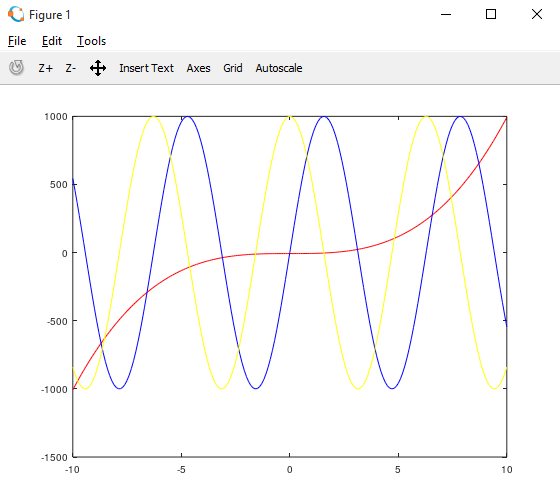
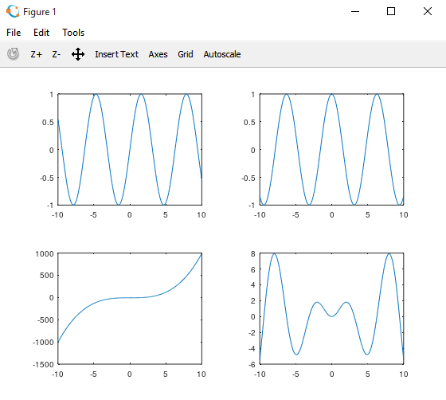
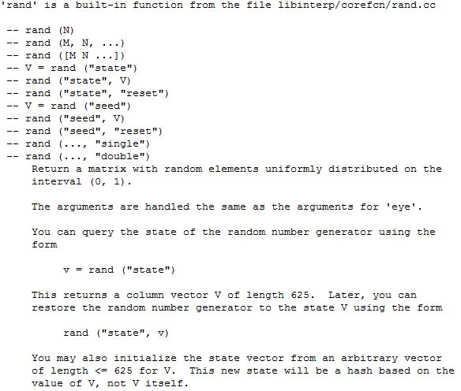

HOME BLOG EBOOKS ABOUT CONTACT SHOP
In this article, we’ll look at some plotting functions in octave and some other useful commands in octave..
Before plotting 2-d graphs in octave, you need to define the x-axis and a mathematical relation connecting x and y values. For example
>>x = -10:0.1:10;
>>y = x.^3 -7;
In this example, the graph will be visible from x= -10 to x= 10 and y is calculated for x= -10, -9.9, -9.8…..9.8, 9.9, 10 i.e. in steps of 0.1. If you increase the value of steps from 0.1 to say 1 the graph will be blockier.
#plot function (y vs x)
>> plot(x,y);

#plot in color, b,r,k,g stands for blue, red, black, green
>> plot(x,y,’g’);

#Give label to x-axis and y-axis
>> xlabel(‘time’)
>> ylabel(‘function’)
>> title(‘plot name’)

>> plot(x,y,’r’);
>> hold on;
>> plot(x,1000.*sin(x),’b’);
>> hold on;
>> plot(x,1000.*cos(x),’y’);

“Hold on” command can be used to plot a graph without removing the existing one.
#close a plot
>> close
A graph can be divided into multiple areas and different functions can be plotted
#dividing plot in 2×2 area. 3rd parameter to refer each subplot (as 1,2,3,4)
>> subplot(2,2,1);
>> plot(x,sin(x));
>> subplot(2,2,2);
>> plot(x,cos(x));
>> subplot(2,2,3);
>> plot(x,y);
>> subplot(2,2,4);
>> plot(x,x.*sin(x));

#for loop
>> for i=1:10,
v(i) = i^2;
end;
>> v
v =
1 4 9 16 25 36 49 64 81 100
#while loop
>>i =1;
>> while i<=10,
v(i)= i+3;
i++;
end;
>>v
v =
4 5 6 7 8 9 10 11 12 13
>> if i==1,
disp(‘1’);
elseif i==2,
disp(‘2’);
else
disp(‘3’);
end;
>> 3
ans = 3
#Current directory
>> pwd
ans = C:\…..
#Change directory
cd ‘C:\…’
#List of all the files in current directory
>> ls
#load a file
>> load file.txt
#list of all the variables currently used
>> who
#clear a particular variable (x in this case)
>> clear x
Functions can be defined directly on the command line or saved in external files with extension .m
>> function [y1,y2] = squareandcube(x)
y1 = x^2;
y2 = x^3;
end;
The above function takes in one parameter x and returns two parameters y1 and y2.
This function can be called in the following manner:
>>[a,b] = squareandcube(3)
>>a
a = 9
>>b
b = 27
When saving a function as a separate file, make sure to change to the or right directory where the file exists.
We have just introduced the basics of octave in the previous and this article, enough to get started. But if you wish to learn further you can always refer the octave documentation:Link
There is no need to by heart these commands, you just need to be familiar. When in doubt you can always google or use the help command to know about any function. For example to get info about the ‘rand’ function, you just need to use this command:
>> help rand

Here's a Matlab/Octave cheatsheet: matlab_cheatsheet_pdf